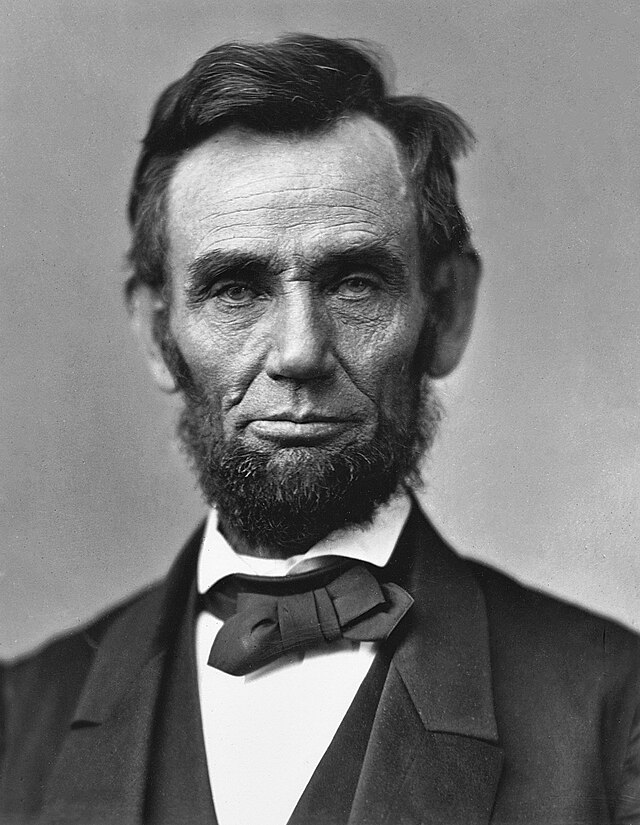
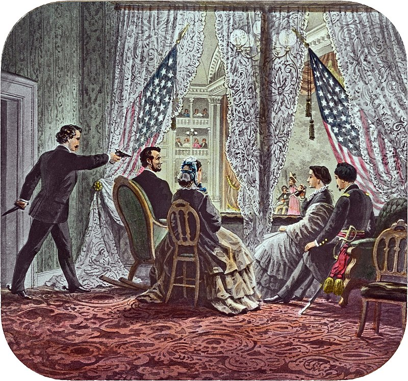

Abraham Lincoln: The Great American Leader
Abraham Lincoln was the 16th President of the United States and is often remembered as one of the greatest leaders in American history. He was born in a log cabin in Kentucky in 1809 and grew up in a humble family. Lincoln worked hard to educate himself and became a lawyer.
Lincoln is famous for leading the country during a challenging time called the the Civil War, which took place from 1861 to 1865. This war was fought between the northern states (Union) and the southern states (Confederacy) over issues like slavery. Lincoln believed in freedom and equality for all people, and he wanted to keep the United States together.
One of the most important things Lincoln did was to sign the Emancipation Proclamation in 1863, which declared that all slaves in Confederate states were to be set free. This was a crucial step toward ending slavery in the United States.
Lincoln is also known for giving powerful speeches, including the famous Gettysburg Address, where he spoke about the importance of a united nation and the idea that all people are created equal.
Tragically, Abraham Lincoln was assassinated in 1865, just a few days after the Civil War ended. He is remembered as a kind and wise leader who worked hard to make the United States a better and fairer place for everyone. His face is even on the penny, a small coin in our money, to remind us of his important contributions to our country.

Short Biography: Abraham Lincoln
in a small log cabin in Hardin County, Kentucky, a baby boy named Abraham Lincoln was born on February 12, 1809. Little did anyone know that this humble beginning would mark the start of an incredible journey that would make him one of the most beloved leaders in American history.
Abraham grew up in a simple farm life, helping his family and learning from books he borrowed from neighbors. Despite facing many challenges, he was a hardworking and curious young boy. As he grew older, he faced even bigger challenges, but he never gave up on his dreams.
Abraham Lincoln had a big heart and believed in fairness and equality for everyone. When he saw that some people were treated unfairly because of their skin color, he decided to do something about it. He became a lawyer and entered into politics to help make positive changes in his community and the country.
In 1860, Abraham Lincoln became the 16th President of the United States. He faced a big problem: the country was divided over the issue of slavery. Abraham Lincoln, with his tall hat and kind face, worked hard to bring the country back together. He believed that all people, no matter their color, should be treated with kindness and respect.
During the Civil War, a time when the country was fighting against itself, President Lincoln made some tough decisions to keep the country united. One of his most famous speeches, the Gettysburg Address, talked about a nation where everyone is equal and free.
Abraham Lincoln loved to tell stories and jokes. His sense of humor helped people feel better during hard times. He was a wise and caring leader, always thinking about what was best for the country and its people.
Tragically, Abraham Lincoln's life was cut short when he was assassinated in 1865, just after the Civil War ended. Even though he was gone, his ideas and dreams lived on, and the United States became a better place because of his leadership.
Abraham Lincoln is remembered as a hero who stood up for what he believed in and worked to make the world a better and fairer place for everyone. His story continues to inspire people of all ages to be kind, work hard, and stand up for what is right.
Fun Facts
Tall Tales: Abraham Lincoln was known for being really tall. He was about 6 feet 4 inches tall, which is much taller than most people back then!
Self-Taught: Lincoln loved to read and teach himself new things. He only had a little bit of formal schooling, but he became a brilliant thinker and writer.
Honest Abe: He earned the nickname "Honest Abe" because he was always honest and fair in his dealings with others.

Timeline
1809 Abraham Lincoln was born on February 12th in a log cabin in Kentucky.
1831 He moved to Illinois and started his own law practice.
1860 Lincoln was elected as the 16th President of the United States.
1861-1865 He led the country during the Civil War, a big fight between the Northern and Southern states.
1863 Lincoln issued the Emancipation Proclamation, which helped to free enslaved people in the Confederate states.
1865 On April 14th, Lincoln was tragically assassinated by John Wilkes Booth.
Abraham Lincoln's Impact on the World
Abraham Lincoln's legacy lives on as a symbol of courage, equality, and unity. He believed in the power of the American people to work together for a better future, and his leadership continues to inspire us all.
Reference Books for Elementary Students
Here is a list of recommended books about Abraham Lincoln that are suitable for elementary students:
"Who Was Abraham Lincoln?" by Janet B. Pascal
This is part of the popular "Who Was?" series, which provides engaging biographies for young readers.
"Abe Lincoln: The Boy Who Loved Books" by Kay Winters
This book focuses on Lincoln's childhood and his love for reading, making it relatable for young readers.
"Abraham Lincoln (Rookie Biographies)" by Wil Mara
This book is part of the Rookie Biographies series and is designed for early readers, providing basic information about Lincoln's life.
"I am Abraham Lincoln" by Brad Meltzer
This is part of the "Ordinary People Change the World" series, presenting Lincoln's life in a fun and accessible way for young readers.
"A Picture Book of Abraham Lincoln" by David A. Adler
This picture book offers a concise and informative overview of Lincoln's life and accomplishments for young readers.
"Looking at Lincoln" by Maira Kalman
This book takes a unique and whimsical approach to introducing Lincoln to children, providing an artistic and imaginative perspective.
"Abe Lincoln: Log Cabin to White House" by Sterling North
This biography provides a more in-depth look at Lincoln's life, suitable for slightly older elementary students.
"Lincoln: A Photobiography" by Russell Freedman
While geared towards older elementary students, this book is an excellent introduction to Lincoln's life through photographs and engaging narrative.
Remember to check the reading level and content to ensure that the book is appropriate for the age and reading abilities of the students. Additionally, it's a good idea to preview the books to ensure they align with the educational goals and values of the school or institution.